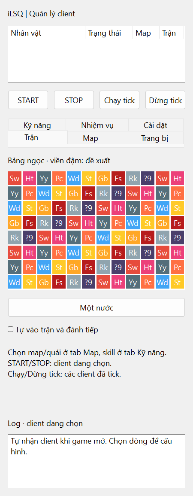

Tự động xếp ngọc
Phân tích bảng ngọc và thực hiện lượt đi theo thứ tự ưu tiên bạn chọn. Điều chỉnh tốc độ và nhịp nghỉ theo nhu cầu.
CẤU HÌNH ƯU TIÊNĐể iLSQ đồng hành cùng bạn trong Loạn 12 Sứ Quân. Từ xếp ngọc đến trận kế tiếp — tất cả trong một giao diện gọn gàng, riêng cho từng client.

Ảnh minh họa giao diện với bảng ngọc mẫu.
Tập trung vào những thao tác lặp lại, giữ các lựa chọn quan trọng trong tay bạn.
Phân tích bảng ngọc và thực hiện lượt đi theo thứ tự ưu tiên bạn chọn. Điều chỉnh tốc độ và nhịp nghỉ theo nhu cầu.
CẤU HÌNH ƯU TIÊNQuét và chọn quái, tự vào trận, xử lý kết quả rồi chuyển sang trận kế tiếp. Có thể dừng riêng từng client.
QUÉT → VÀO TRẬN → TIẾP TỤCTự tìm client khi game mở. Mỗi nhân vật có cấu hình và trạng thái riêng; chạy hoặc dừng các client đã tick cùng lúc.
MỖI CLIENT MỘT CẤU HÌNHXem danh sách kỹ năng ngoài trận, chọn kỹ năng cần dùng và thiết lập điều kiện MP cho quá trình đánh tự động.
CHỦ ĐỘNG CHỌN KỸ NĂNGTheo dõi trang bị, sửa theo ngưỡng độ bền và nhặt vật phẩm. Các mục thiết lập được chia tab để dễ tìm.
THEO DÕI ĐỘ BỀNChọn map mục tiêu, xem danh sách nhiệm vụ và đọc log hoạt động. Kiểm tra bản cập nhật ngay khi mở tool.
THÔNG TIN TRONG MỘT CỬA SỔGiao diện dọc gọn gàng, các nhóm thiết lập riêng và log hoạt động ở cuối cửa sổ.
Tải file iLSQ.exe từ bản phát hành. Đặt trong thư mục bạn có quyền ghi để tool có thể tự cập nhật.
Mở client và đăng nhập nhân vật. iLSQ tự quét client; chọn dòng nhân vật cần cấu hình.
Chọn ưu tiên ngọc, kỹ năng và tùy chọn vào trận kế tiếp. Nhấn Start cho client đang chọn hoặc Chạy tick cho cả nhóm.
Chủ động theo dõi phiên chạy. Nhấn Stop để dừng client đang chọn, hoặc Dừng tick để dừng nhóm đã chọn. Khi game cập nhật, hãy kiểm tra phiên bản iLSQ tương thích trước khi chạy.
Tool dành cho Windows 10 / 11 64-bit và bản PC của Loạn 12 Sứ Quân. Hãy dùng bản iLSQ tương thích với phiên bản game hiện tại.
Start chạy client đang chọn trong danh sách. Chạy tick chạy các client được đánh dấu. Stop và Dừng tick hoạt động tương ứng.
Hiện tại bạn đăng nhập game trước. iLSQ tự nhận diện các client đã mở để bạn cấu hình và điều khiển.
Mở iLSQ để kiểm tra bản mới và xem ghi chú phát hành. Nếu thao tác không còn hoạt động, dừng tool và đợi bản tương thích; tránh chạy lặp lại khi có lỗi.
Công cụ hỗ trợ dành cho hành trình Loạn 12 Sứ Quân trên PC.